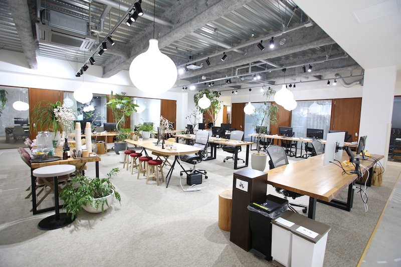

Lean
不要な複雑性を取り除き、経営資源を本質的な価値創出へ集中させます。
AIによって人間の知性と企業の意思決定を拡張し、AIドリブンな経営変革を実現する。
LUTC Consultingは、戦略、業務、データ、テクノロジーを統合し、企業固有の経営資産をAI時代の競争力へ転換するプロフェッショナルサービスファームです。
PHILOSOPHY
LUTC Consulting（ルトゥック コンサルティング）は、Lean Utility & Task Coordinationの思想に基づき、企業の複雑な業務、分散した知識、属人的な意思決定を再設計するAIドリブン・コンサルティングファームです。
私たちは、AIを単なる業務効率化ツールとしてではなく、企業の意思決定、業務運営、組織学習、成長戦略を支える新たな経営アーキテクチャとして捉えています。
不要な複雑性を取り除き、経営資源を本質的な価値創出へ集中させます。
テクノロジーを単なる機能ではなく、現場で使われる実用的な経営価値へ転換します。
組織に分散した業務、知識、意思決定を統合し、実行可能な仕組みへ再構成します。
Our Services
LUTC Consultingは、AI活用戦略の策定から、業務プロセスの再設計、システム実装、組織定着までを一貫して支援します。
経営課題、業務構造、データ資産、組織能力を分析し、企業ごとに最適なAI活用戦略を設計します。
既存業務を単に自動化するのではなく、目的、判断基準、情報の流れ、担当者の役割を再定義します。
AI活用を単発のツール導入で終わらせず、既存システム、データベース、業務アプリケーションと連携した環境を構築します。
AIが実際の業務で使われ、成果につながり、継続的に改善される状態をつくります。
企業に分散した知識、データ、業務ノウハウ、意思決定基準を構造化し、AIによって活用可能な経営知能基盤へ転換します。
Our Approach
LUTC Consultingの支援は、戦略、知識資産、実行の3つを統合することに特徴があります。経営構想と現場実装を分断せず、AI活用が実際の業務成果につながる状態を設計します。
経営課題、業務構造、既存システム、データ、組織課題を把握します。
AI活用テーマ、優先順位、変革ロードマップ、KPIを定義します。
業務プロセス、システム構成、データ連携、AI活用シナリオを設計します。
プロトタイプ開発、ツール導入、システム連携、業務実装を行います。
研修、ガイドライン、運用設計、改善サイクルを整備し、組織に定着させます。
LUTC Consultingは、提案書だけを納品するコンサルティングではありません。戦略策定から、業務設計、システム実装、現場定着までを一貫して支援します。AI活用において重要なのは、技術の導入ではなく、実際の業務と意思決定が変わることです。
Japan Base
LUTC Consultingは、日本における活動拠点を神奈川県小田原市のARUYO ODAWARAに置いています。
小田原を拠点とすることで、首都圏の先端知見と地域企業の現場課題を接続し、全国のパートナーと連携した実行型の支援体制を構築しています。
地域企業の業務課題、経営資産、産業構造を踏まえたAI活用支援を展開しています。

Leadership
AIドリブン経営変革、クライアントリレーション、プラクティス全体の推進を担当。
業務プロセス再設計、システムインテグレーション、AI実装支援を担当。
リサーチ、ドキュメンテーション、プロジェクト調整、定着支援を担当。
Contact Us
AI活用戦略、業務改革、システム導入、AI研修、パートナー連携に関するご相談を受け付けています。
現在の課題が明確でない段階でも、事業内容や業務状況をもとに、AI活用の可能性を整理することができます。
お問い合わせにより取得した情報は、ご相談内容への回答、連絡、サービス提供に必要な範囲で利用します。法令に基づく場合を除き、本人の同意なく第三者へ提供しません。正式公開時には、法人情報、所在地表記、問い合わせ送信先、個人情報保護方針の詳細を確定してください。